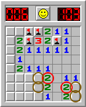

Quem sou eu
Sou um estudante da área de tecnologia, atualmente focado em desenvolvimento web. Estou me aperfeiçoando em algumas linguagens de programação como Java e Python, além de estudar também o front-end em HTML, CSS e JavaScript. Também tenho um gosto por desenvolvimento de jogos e pixel art. Estou à procura da minha primeira experiência profissional para me inserir no mercado de trabalho.
O que me motiva a estudar tecnologia é a minha curiosidade em descobrir como as coisas funcionam por trás das cortinas. Acredito que estudando essa área eu terei uma visão ainda mais ampla de tudo a minha volta.
Tecnologias que já vi
- HTML
- CSS
- Java
- JavaScript
- Python
Meus Conhecimentos
| Tecnologia | Nível | Experiência |
|---|---|---|
| HTML | Básico | 2 meses |
| CSS | Iniciante | 1 mês |
| JavaScript | Em breve | ------- |
Meus hobbies para horas vagas

- Jogar Elden Ring e campo minado.
- Ouvir música.
- Assistir vídeos.
- Praticar Muay thai.
- Fazer exercícios físicos.
- Conversar sobre algum tema interessante.
Objetivos profissionais
- Curto prazo (6 meses): Desenvolver um projeto completo com Java e HTML.
- Médio prazo (1-2 anos): Conseguir um estágio na minha área de estudo.
- Longo prazo (3-5 anos): Estar consolidado na minha carreira de Desenvolvimento.
Meus Projetos
Xadrez
Desenvolvi uma partida de xadrez puramente usando Java, com lógica de programação e com poucas API. O jogo roda no terminal e no CMD.
WorkShop
Um sistemas de produtos e usuários sem integração com banco de dados, é um projeto um pouco mais avançado em que utilizei SpringBoot.
Sistema de Comentários
Um sistema que desenvolvi com o objetivo de estudar a integração com MongoDB, funciona como uma rede de post e comentários.
Links para me encontrar
TOP 5 sites que mais acesso
Minha rotina de estudos
| Dia | Atividade | Duração |
|---|---|---|
| Segunda-feira | Java | 2 horas |
| Terça-feira | HTML | 2 horas |
| Quarta-feira | Praticar exercícios em Java | 2 horas |
| Quinta-feira | Praticar exercícios em HTML | 2 horas |